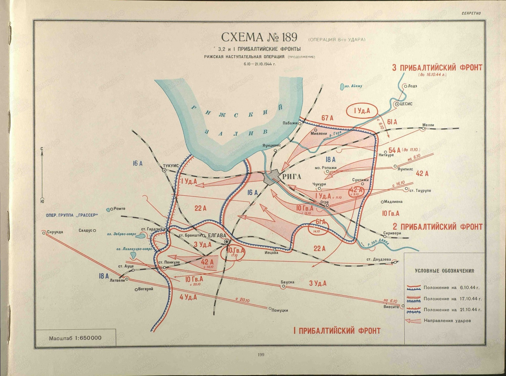

Пояснительная записка
Введение
Рижская операция началась 14 сентября 1944 года, когда войска Прибалтийских фронтов при поддержке 3-го Белорусского и Ленинградского фронтов начали боевые действия по уничтожению: в Латвии противостоящей им германской группы армий "Север" в рамках общей Прибалтийской наступательной операции. Она, в свою очередь являлась продолжением стратегического наступления Красной армии летом 1944 года, в ходе которого была полностью освобождена Белоруссия, часть Эстонии, Латвии и Литвы
В операции участвовали двенадцать советских армий, общая численность которых составляла почти 900 тысяч человек. Главным "аргументом" на поле боя для противника являлись более трех тысяч танков самоходок, а также более 17 тысяч орудий и минометов С воздуха красноармейцев прикрывали свыше двух с половиной с самолетов, с моря корабли Балтийского флота Координировал действия фронтов один из выдающихся военачальников Второй мировой, начальник Генерального штаба РККА маршал Александр Василевский. По его замыслу, который одобрила Ставка Верховного главнокомандования в Москве, центром наступления была Рига, куда сходились важные автомобильные железнодорожные Морские и речные пути почти всего Янтарного края
В свою очередь нацистская Германия была готова биться за Прибалтику до последнего солдата - Берлин контролировал восточную часть Балтийского моря, по которому в Третий рейх из стран Скандинавии шли поставки стратегического сырья, позволявшего вести войну. Кроме того, эта территория, которая прикрывала Восточную Пруссию, сама по себе была для немцев важной экономической базой. Ее защищала группа армий "Север", в составе которой были две полевые и одна танковая армия (количественный состав любой германской армии в среднем кратно превышал советский аналог), а также армейская группа "Норд". По танкам (1200), артиллерии (около 7000 оружий) и авиации (около 400) "Север" существенно уступал советским войскам. Меньшим было и общее количество германских войск - 730 тысяч солдат и офицеров.
Однако в пользу немцев был сложный для танков лесисто-холмистый пересеченный рельеф местности, с многочисленными озерами и реками. Все это было усилено заблаговременно построенными многочисленными оборонительными рубежами, изобилующими бетонными долговременными огневыми точками и бронеколпаками.
Во главе группы армий "Север" стоял жесткий и безжалостный генерал Фердинанд Шернер, о котором боевые офицеры отзывались как о полевом жандарме, а не солдате. Характерно, что этот любимец Гитлера, который после войны был приговорен в ФРГ к тюремному заключению за многочисленные расстрельные приговоры своим подчиненным (обвиненным в трусости или дезертирстве), сам сдался в плен американцам, предварительно выменяв свой роскошный мундир на скромный костюм баварского крестьянина. [8]



Обстановка перед операцией
Октябрь 1944 г., район Риги. Прибалтика в планах немецкого руководства всегда занимала важное место. Она прикрывала Восточную Пруссию с северо-востока. Из-за чего главный удар трех Прибалтийских фронтов был нацелен на столицу Латвии Ригу – важнейший политико-административный и промышленный центр, узел пересечения сухопутных и морских коммуникаций.
Начало наступления Прибалтийских фронтов на рижском направлении намечалось на 5 – 7 сентября, войск Ленинградского фронта – на 15 сентября. Выполнение задач, поставленных ставкой ВГК, требовало весьма сложного комплекса подготовительных мероприятий. В течение недели советским войскам предстояло увеличить общее количество танков и САУ на участках прорыва почти в 1,5 раза. Особое внимание уделялось танкам, непосредственно поддерживающими пехоту. Однако эту проблему решить полностью не удалось, так как по указанию Ставки ВГК танковые и механизированные корпуса предписывалось использовать только для развития успеха. Поэтому из 287 имевшихся во 2-м Прибалтийском фронте танков и САУ в качестве танков непосредственной поддержки пехоты были применены лишь 133 боевые машины. Подготовка к наступательно операции проводилась по всем направлениям. Войска занимались накоплением боеприпасов, горючего, продовольствия, снабжением всем необходимым госпиталей. В соединениях и частях шла боевая учеба со всеми категориями личного состава – бойцы и командиры учились преодолевать развитую систему обороны противника, преодолевать разнообразные инженерные сооружения, препятствия, форсировать реки и озера.
Несмотря на круглосуточную работу, времени оказалось недостаточно. В связи с этим Ставка отложила начало операции на неделю; войска Ленинградского фронта должны были начать наступление 17 сентября. Благодаря этому органы тыла, не успевшие к первоначально намеченному сроку подвезти необходимое количество боеприпасов, горючего и продовольствия, сумели наверстать упущенное. Инженерные войска лучше подготовились к преодолению водных преград, завершили строительство намеченных дорог и колонных путей. К этому времени в Прибалтике установилась сухая солнечная погода. Дороги окончательно просохли, и советские войска поспешили этим воспользоваться. [7]
Силы сторон
Немецкая армия
Численность
-техника: около 7 тыс. орудий и миномётов, свыше 1200 танков и штурмовых орудий, 400 боевых самолётов
-численность: 56 дивизий и 3 бригады, свыше 700 тыс. Человек.
Группы армий “Центр” - Фердинанд Шернер.
18 А - Генерал-полковник Георг Линдеман 16 января 1942 - 29 марта 1945; генерал пехоты Эренфрид Бёге 5 сентября1944 - 8 мая 1945
16 А - Генерал-полковник Карл Хильперт 3 сентября 1944 - 10 марта 1945
2 ТА - Эрхард Раус 15 августа 1944 - 9 марта 1945
18 армия Эренфрид Бёге - генерал-лейтенант 05.09.44 - 08.05.45. Начальник штаба - Фридрих Ферч 01.12.43 - 25.05.45.
Состав армии на 15 июня 1944:
а) XXVIII армейский корпус
12 люфтваффе отдел
21 пехотная дивизия
30 пехотная дивизия
б) XXXVIII армейский корпус
121 армейская дивизия
32 пехотная дивизия
83 пехотная дивизия
в) L армейский корпус
218 пехотная дивизия
19 добровольческая пехотная дивизия СС (вторая латышская)
122 пехотная дивизия
43 пехотная дивизия
15 дивизия СС (первая латышская)
XXXVIII армейский корпус. Командир - генерал-полковник Курт Херцог
XXVIII армейский корпус. Командир - генерал-полковник Ханс Гольник
L армейский корпус. Командир - генерал-полковник Ганс Бёк-Беренс
16 армия. Генерал-полковник Карл Хильперт 03.09.44 - 10.03.45.
а) I армейский корпус 01.08.44 - 20.01.45 Теодор Буссе:
87 пехотная дивизия
205 пехотная дивизия
281 охранная дивизия
б) II армейский корпус генерал артиллерии Вильгельм Хассе:
12 пехотная дивизия
XXXII пехотная дивизия
в)VIII армейский корпус
Генерал артиллерии Вальтер Хартман 10.09.1944-19.04.1945
5 легкая пехотная дивизия
21 полевая дивизия
10 армейский корпус
Генерал-полковник Герман Ферч 21.09.1944-12.12.1944
26 пехотная дивизия
290 пехотная дивизия
389 пехотная дивизия
3 Танковая армия
Генерал-полковник Эрхард Раус 15.08.1944-09.04.1945
а)XXXIX армейский корпус Дитрих фон Заукен 29.07.1944-15.10.1944
4 танковая дивизия
5 танковая дивизия
12 танковая дивизия
б) XL танковый корпус
Генерал-полковник Зигфрид Херици 20.09.1944-08.05.1945
19 танковая дивизия
45 танковая дивизия
в) IX армейский корпус
Генерал-лейтенант Рольф Вютман 05.12.1943-20.04.1945
45 пехотная дивизися
252 пехотная дивизия
Корпусная группа D
г) XXIV танковый корпус
Генерал-полковник Лео Фрайхер Гейер Швеппенберг 15.02.1940-08.05.1945
9 танковая дивизия
11 танковая дивизия
3 моторезованная дивизия
д) XII армейский корпус
Винцент Мюллер 04.06.1944-28.03.1945
19 пехотная дивизия
260 пехотная дивизия
267 пехотная дивизия
[10]
Советских армий
Численность
-техника: 17 500 орудий и миномётов, 3000 танков и САУ, 2500 самолётов
-численность: 900 тыс. - 1,5 млн. личного состава
Координировал действия начальник Генерального штаба РККА маршал Александр Василевский
1-й Прибалтийский фронт - Иван Христофорович Баграмян, генерал армии;
2-й Прибалтийский фронт - Андрей Иванович Еременко, генерал армии;
3-й Прибалтийский фронт - Иван Иванович Масленников, генерал армии;
Передовые отряды 43-ей армии - Афанасий Павлантьевич Белобородов;
39-ой армией 3-го Белорусского фронта - Иван Ильч Людников.
1 Прибалтийский фронт
51-я армия в мае — июне 1944 года перегруппирована на западное направление. В составе 1-го Прибалтийского фронта участвовала в операциях по освобождению Латвии и Литвы.
10-й стрелковый корпус - Неверов Константин Павлович 17.03.1943-09.051945
60-й стрелковый корпус - Люхтиков Анисим Стефанович 07.04.1944-25.04.1945
63-й стрелковый корпус - Бакунин Фёдор Алексеевич 20.05.1944 — 06.04.1945,
20.04.1945-09.05.1945
43-я армия после проведения артиллерийской и авиационной подготовки начала наступление на рижском направлении, преодолев упорное сопротивление войск противника 43-я и 4-я ударная армии форсировали реку Лиелупе.
1-й стрелковый корпус - Васильев Николай Алексеевич 28.05.1944 - 09.05.1945
84-й стрелковый корпус - Прокофьев Юрий Михайлович 28.05.1944-09.05.1945
92-й стрелковый корпус - Ибянский Николай Болеславович 28.05.1944-06.04.1945
4-я ударная армия с 8 августа в составе 1-го Прибалтийского фронтов принимала участие в Рижской наступательной операции при попытке прорвать оборону Курляндского котла.
22-й гвардейский стрелковый корпус - Ручкин Архип Иванович 28.05.1944-30.11.1944
14-й стрелковый корпус - Ивановский Александр Александрович 12.09.1944-22.09.1944
83й стрелковый корпус - Солдатов Николай Лаврентьевич 29.03.1944-09.05.1945
6-я гвардейская армия летом 1944 г. в составе 1-го Прибалтийского фронта принимала участие в Витебско-Оршанской, Полоцкой, Шяуляйской, осенью – в Рижской и Мемельской наступательных операциях.
2-й гвардейский стрелковый корпус - Баксов Алексей Иванович 21.08.1944-09.05.1945
3-й гвардейский стрелковый корпус - Ермаков Аркадий Николаевич 07.04.1944-09.05.1945
103-й стрелковый корпус - Федюнькин Иван Федорович 09.01.1944-28.12.1944
2-я гвардейская армия 8 июля была передана в состав 1-го Прибалтийского фронта. К этому времени в неё входили 11-й и 13-й гвардейские и 54-й стрелковый корпуса.
11-й гвардейский стрелковый корпус - Арушанян Баграт Исаакович 23.08.1944-09.05.1945
13-й гвардейский стрелковый корпус - Лопатин Антон Иванович 22.07.1944-09.05.1945
54-й стрелковый корпус - Ксенофонтов Александр Сергеевич 20.08.1944 - 09.05.1945
87-я гвардейская стрелковая дивизия - Тымчик Кирилл Яковлевич 16.04.1943 -09.05.1945
5-я гвардейская танковая армия осенью 1944 года, в ходе наступления советских войск в Прибалтике была использована против 3-й немецкой танковой армии, результатом чего стало окружение немецких войск в районе Мемеля.
3-й гвардейский танковый корпус - Панфилов Алексей Павлович 10.08.1944 - 09.05.1945
29-й танковый корпус - Малахов Ксенофонт Михайлович 09.08.1944 — 09.05.1945
3-я воздушная армия с 20 октября 1943 г. вступила в 1-й Прибалтийский фронт и принимала участие в Смоленской, Невельской, Городокской, Белорусской и Прибалтийской наступательной операциях.
256-я истребительная авиационная дивизия - Герасимов Николай Семенович 25.12.1942 - 16.11.1944
264-я штурмовая авиационная дивизия - Клобуков Евгений Васильевич 04.09.1943 -11.05.1945
2 Прибалтийский фронт
42-я армия входила в состав 2-го Прибалтийского фронта. Перед началом Рижской наступательной операции перед армией ставилась задача наступления в полосе главного удара в направлении Нитауре с участка восточнее Эргли, преодолеть предполье оборонительной полосы противника, взломать оборонительный рубеж и во взаимодействии с войсками 3-й ударной армии овладеть Нитауре.
93-й стрелковый корпус - Сычев Александр Иванович 26.05.1944-14.06.1944, Шарабурко Яков Сергеевич 06.11.1944-11.05.1945
110-й стрелковый корпус - Грязнов Афанасий Сергеевич 15.04.1944-09.05.1945
124-й стрелковый корпус - Якунин Николай Петрович 28.07.1944-30.09.1944, Алиев
Иван Михайлович 02.10.1944-07.02.1945, Иванов Иван Иванович 08.02.1945-09.05.1945
22-я армия во взаимодействии с другими армиями и фронтовой авиацией успешно выполнила поставленные задачи по разгрому вражеских войск и освобождению ряда районов советской Прибалтики. В числе первых вступили на родную землю воины латышского 130-го стрелкового корпуса, входившего в состав армии.
90-й стрелковый корпус - Шерстнев Григорий Иванович 17.08.1943-07.06.1944, Мартиросян Гаик Аганесович 16.01.1945-26.02.1945
130-й стрелковый корпус - Бранткалн Детлав Карлович 05.06.1944-09.05.1945
155 укрепленный район (Волоколамский) - Терешкин Федор Михайлович 27.09.1944-24.12.1944
15- я воздушная армия 115в наступательных операциях 1944 года армия содействовала войскам фронта при прорыве сильно укреплённой обороны противника.
286-я истребительная авиационная дивизия - Иванов Иван Иванович 10.07.1942-24.02.1945
225-я штурмовая авиационная дивизия - Корпусов Василий Алексеевич 18.06.1944-09.05.1945
284-я бомбардировочная авиационная дивизия - Трушкин Иван Андреевич 23.07.1943-09.05.1945
3-я ударная армия на армию возлагалась задача: прорвать оборону противника на участке Аугуст, Озолмуйжа, во взаимодействии с 42-й и 22-й армиями разгромить его части севернее р. Западная Двина (Даугава) и овладеть рубежом Таурупе, Менгеле.
44-й стрелковый корпус - Клешнин Михаил Никитович 26.05.1943-11.05.1945
79-й стрелковый корпус - Переверткин Семен Никифорович 24.05.1944-09.05.1945
100-й стрелковый корпус - Михайлов Денис Васильевич 29.05.1944-09.05.1945
10-я гвардейская армия армия 8 октября освободила город Огре, а также наряду с армиями 2-го и 3-го Прибалтийских фронтов с 13 по 15 октября принимала участие в освобождении Риги.
7-й гвардейский стрелковый корпус - Кулешов Андрей Данилович 13.08.1944-06.04.1945
15-й гвардейский стрелковый корпус - Хоруженко Никифор Гордеевич 17.04.1943-02.11.1944
19-й гвардейский стрелковый корпус - Букштынович Михаил Фомич 18.02.1944-12.08.1944,
Грибов Иван Владимирович 11.01.1945-02.04.1945
118 укреплённый район - Яловенко Василий Семенович 28.09.1943-31.12.1945
3 Прибалтийский фронт
1-я ударная армия
12 гвардейская стрелковый корпус - Буньков Степан Михайлович 30.07.1944 - 10.02.1945
14 гвардейский стрелковый корпус - Степаненко Павел Афиногенович 18.12.1942 - 09.05.1945
119 стрелковый корпус - Никишин Николай Николаевич 06.08.1944 - 09.05.1945
52 гвардейская стрелковая дивизия - Козин Нестор Дмитриевич 01.09.1944 - 31.05.1945
54-я армия
7 стрелковый корпус - Чистов Владимир Афанасьевич 28.09.1944 - 26.04.1945
123 стрелковый корпус - Вержбинцкий Виктор Антонович 03.06.1944 - 03.10.1944
67-я армия
111 стрелковый корпус - Рождественский Борис Александрочив 04.11.1943 - 09.05.1945
122 стрелковый корпус - Мартынчук Николай Моисеевич 05.03.1944 - 09.05.1945
14-я воздушная армия
1606 зенитный артиллерийский полк
1607 зенитный артиллерийский полк
[1]